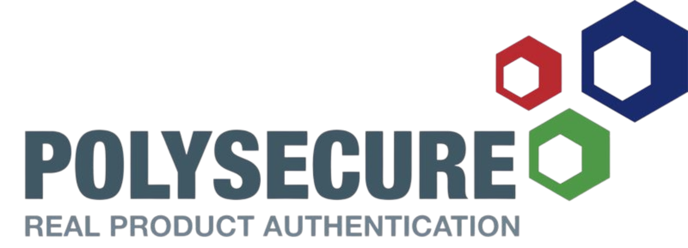

Dec 2024 - Present
Freiburg, Germany

ALgorithms and Computer Vision Engineer
Polysecure GmbH
Building hyperspectral imaging and classification workflows for real-time polymer sorting.
- Computer Vision
- Hyperspectral Imaging
- CNN
- Python
- C
- Numba
- Pushbroom Acquisition
- SQL
- Django REST
- Machine Learning
- JavaScript
- Color Science
- XYZ Space | Lab* Space